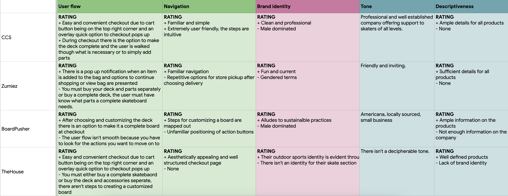
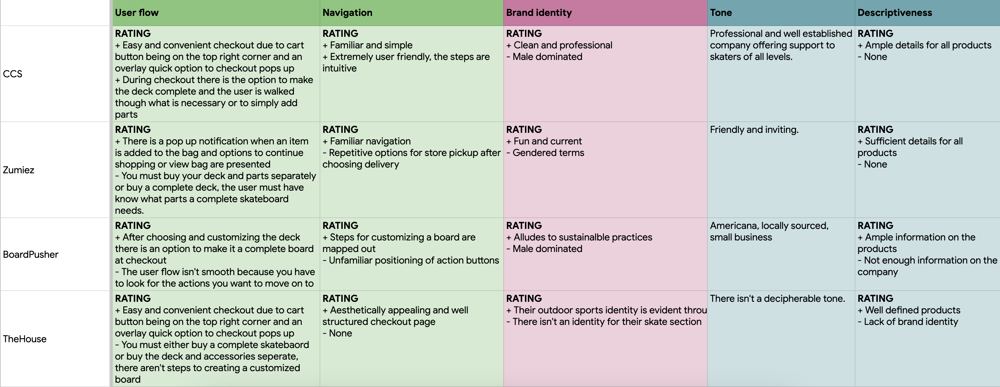
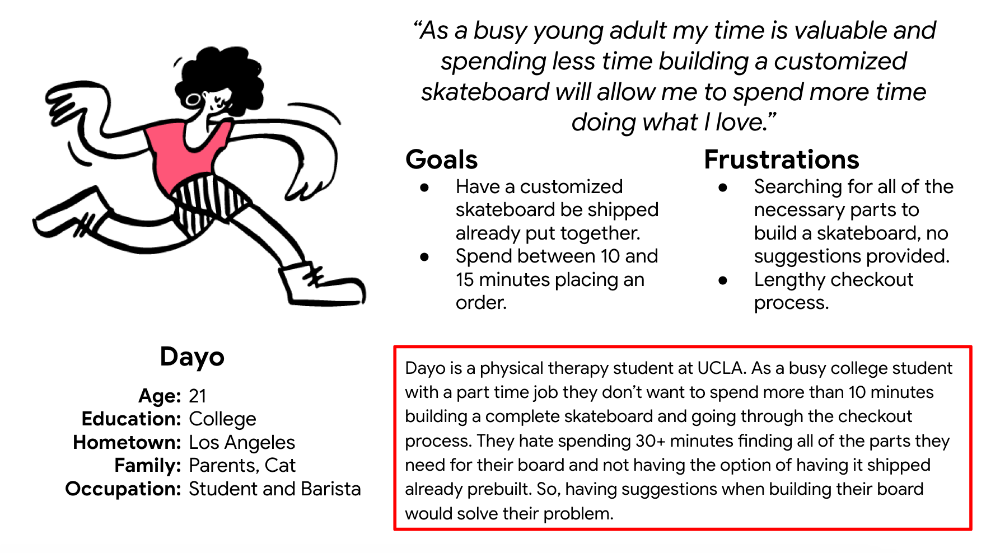
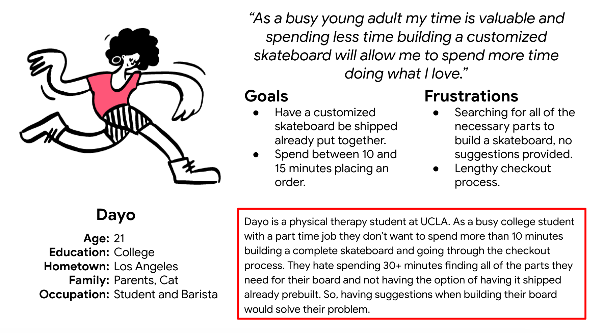
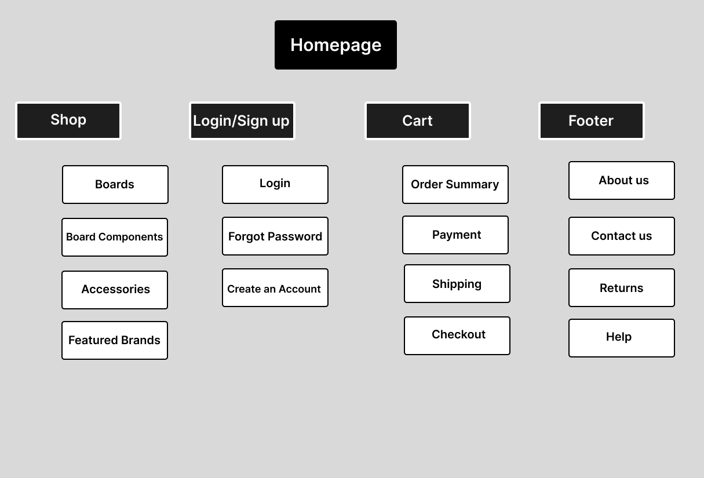

 



Prior to starting the design process, it's ideal to generate ideas. The purpose of this step is not perfection, but rather a sort of warm up to wire-framing. In this phase I decided to begin with the crazy 8's sprint method followed by the creation of a site map.
For this project I decided to employ the Crazy 8's design sprint method, which consists of sketching 8 distinct ideas in the span of 8 minutes with the purpose of generating numerous creative ideas without the pressure of perfection looming over.
Having warmed up with the crazy 8's activity it's ideal to take sometime to plan out the information architecture for the website, since this will help expedite the design process by informing the wireframes. Below is an image of the site map for the responsive website.
In this section of the case study I'll be going over the steps I took to design the skate shop's responsive website. I'll explain my design process which begins with paper wireframes, a low risk brainstorming tool used to speed up the design workflow, I view them as an early information architecture planning aid. While the remaining steps are a cyclical iteration of perfecting digital wireframes and improving prototypes through the implementation of usability studies. Ultimately, the purpose of following through with the design process is to create a functional user friendly design. The end goal isn't perfection, but rather being aware that there is always room for improvement.
The wireframes below only cover four pages due to the fact that various pages will simply be duplicates of others with different headings. For example, the top right wireframe wil be used as a template for three other pages.

For this portion of the digital wireframes I began by creating designs for two different screen sizes, the website and mobile, and there is a prototype for each screen size. I decided to do this because I realized it would be easier to test the screen sizes separately analyze any overlap in user pain points between both sizes.
 Website Lo-Fi Prototype Link
Mobile lo-fi Prototype link
Website Lo-Fi Prototype Link
Mobile lo-fi Prototype link
By following through with evaluating designs early on in the design process--as is the case with low fidelity prototypes--through testing I ensure that design issues are caught early on in the hopes of minimizing work later in the design process. From my perspective, the primary goals of early product testing is to discover and fix issues prior to investing too much time and resources.
This particular usability study, is unmoderated, composed of six participants and broken down into the following parts: a usability research study plan, the usability notes, an affinity diagram, the findings, and a brief explanation on the design iteration that resulted from the study.
Usability Research Study Plan
Creating a research plan prior to conducting usability research is a practice that I find extremely useful. Not only does it help me set research expectations, it also serves as an overview of the study that I can reference back to when needed. Overall, it provides a great starting point from which to begin thinking about the impact your usability research have.

 Usability Study Notes Link
Usability Study Notes Link

The affinity diagram above was used to identify user patterns and form insights regarding the products usability. These findings focused on three screens and guided the design changes implemented in the mockup.

Iterating on the design, for me, is one of the most exciting parts of the design process. Primarily because, I'm able to take all of the information collected from the users during the usability study and implement creative ideas to ameliorate user pain points with the hopes of having a positive impact.

Below I'm sharing images of the mockups for all three screen sizes: desktop, tablet, mobile. They are not complete images of every page, but in the high fidelity prototype section I will be sharing links to all three screen sizes.

I considered it important to create hi-fi prototypes for each screen size because there is always possible testing and design iterations. They can also be used as demonstrations for key project stake holders.
 Hi-Fi Desktop Prototype Link
Hi-Fi Desktop Prototype Link
 Hi-Fi Tablet Prototype Link
Hi-Fi Tablet Prototype Link
 Hi-Fi mobile Prototype Link
Hi-Fi mobile Prototype Link